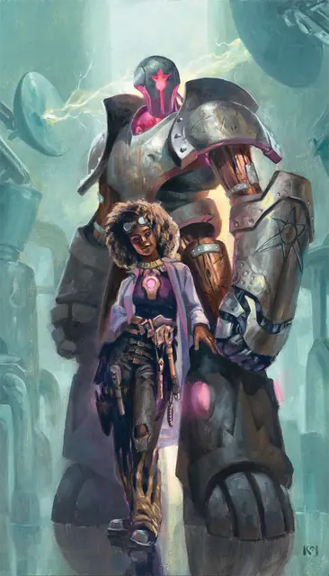

Щитостраж
Shield Guardian
Большой Конструкт, без мировоззрения

Класс Защиты 17 Инициатива −1 (9)
Хиты 142 (15к10 + 60)
Скорость 30 футов
| мод | спас | ||
|---|---|---|---|
| СИЛ | 18 | +4 | +4 |
| ЛОВ | 8 | −1 | −1 |
| ТЕЛ | 18 | +4 | +4 |
| мод | спас | ||
|---|---|---|---|
| ИНТ | 7 | −2 | −2 |
| МДР | 10 | +0 | +0 |
| ХАР | 3 | −4 | −4 |
Иммунитеты Яд; Испуганный, Истощение, Окаменевший, Отравленный, Очарованный, Парализованный
Чувства Тёмное зрение 60 футов, пассивное Восприятие 10, Слепое зрение 10 футов
Языки понимает Любой язык и команды на нём, но не говорит
Опасность 7 (2 900 опыта; БВ +3)
Особенности
Привязка. Щитостраж магическим образом привязан к амулету. Пока щитостраж и амулет находятся на одном плане существования, владелец амулета может телепатически позвать щитостража к себе; щитостраж знает направление и расстояние до амулета. Если щитостраж находится в пределах 60 футов от владельца амулета, половина любого получаемого владельцем урона (округляя вверх) переносится на щитостража.
Регенерация. Щитостраж восстанавливает 10 Хитов в начале каждого своего хода, если у него остаётся хотя бы 1 Хит.
Хранение заклинаний. Заклинатель, носящий амулет щитостража, может вложить в щитостража одно заклинание с уровнем не выше 4-го. Для этого владелец должен сотворить заклинание на щитостража, находясь в пределах 5 футов от него. Заклинание не производит эффект, а сохраняется в нем. Любое предыдущее вложенное заклинание утрачивается, когда вкладывается новое. Щитостраж может сотворить вложенное заклинание при наступлении любых условий, определённых исходным заклинателем, не нуждаясь в компонентах и используя заклинательную характеристику заклинателя; затем вложенное заклинание утрачивается.
Действия
Мультиатака. Щитостраж совершает две атаки Кулаком.
Кулак. Бросок рукопашной атаки: +7, досягаемость 10 фт. Попадание: 11 (2к6 + 4) Дробящего урона плюс 7 (2к6) Силового урона.
Реакции
Защита. Условие: По владельцу амулета щитостража попадает бросок атаки, пока владелец находится в 5 футах от щитостража. Эффект: Владелец получает бонус +5 к КЗ (в том числе против вызвавшей ответ атаки, что может привести к её промаху) до начала следующего хода щитостража.
Бонус мастерства +3
Среда обитания Город
Сокровища Отсутствуют
Щитостраж
Магический телохранитель, управляемый амулетом
Щитостраж — внушительный магический автоматон — подчиняется приказам хозяина и оберегает его от опасностей. При создании такого телохранителя оживляющая его магия переплетается с привязанным к нему амулетом управления. Любое существо, владеющее амулетом, способно управлять этим конструктом, а маги к тому же могут вложить в щитостража заклинание, чтобы тот высвободил его при заранее заданных обстоятельствах. Однако главная цель щитового стража — защищать владельца. Он неотступно сопровождает того, у кого находится амулет, и встаёт между ним и любой угрозой. Хотя он не лишён рассудка, чувство самосохранения у него отсутствует, и он без колебаний пожертвует собой, чтобы спасти хозяина.
Обычно щитовых стражей делают из стали, камня и дерева, придавая им облик бдительных воинов. Встречаются и более причудливые образы, отражающие вкусы создателей. Благодаря своей стойкости щитовые стражи нередко переживают собственных творцов и со временем начинают служить другим существам. Амулет управления щитостража может веками передаваться в магической гильдии или семье.